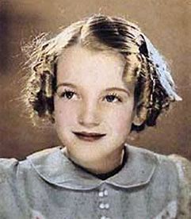
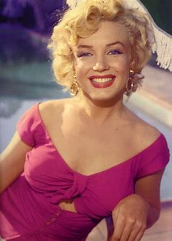
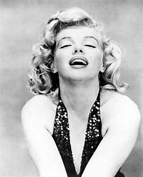
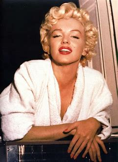
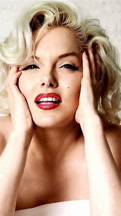
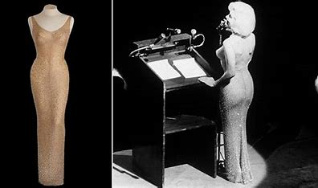

what was she famous for?
Marilyn Monroe was an American actress, model, and singer1. She is known for playing comic "blonde bombshell" characters, and became one of the most popular sex symbols of the 1950s and early 1960s, as well as an emblem of the era's sexual revolution1. Her films grossed more than $200 million2. Monroe found work as a “pin-up” model in the mid-1940s, and then had small roles in film. In the early ‘50s, Monroe gained more recognition as an actress, and by the mid-’50s she was a household name and “sex symbol”.
|  |  |
|  |  |
|  |  |